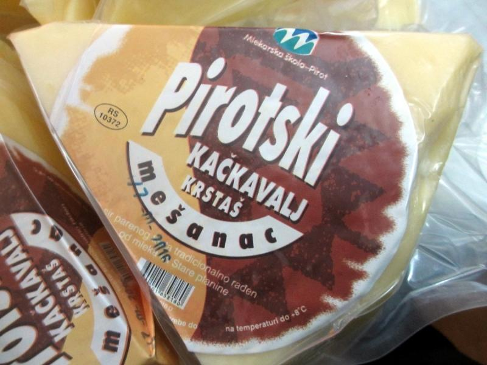
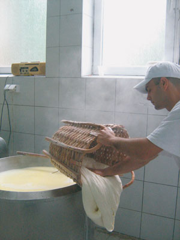
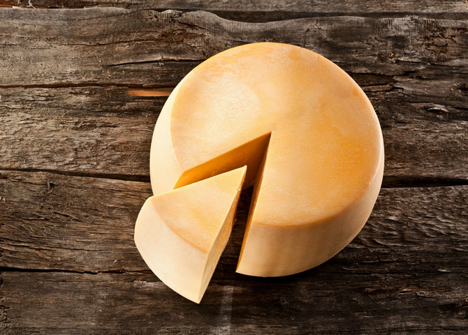

Pored ćilima simbol i obeležje grada na Nišavi je i kačkavalj, proizvod čiju su veštinu izrade stanovnici visockih sela naučili od Crnovunaca, odnosno Karakačana, koji su izmedu 17. i 19. veka živeli na Staroj planini. Za ova stočarska plemena pretpostavlja se da vode poreklo od Grka ili Cincara. Vremenom oni su se odselili ili similarizovali sa lokalnim stanovništvom. Uz pomoć originalne recepture stare više od dva veka i snažnih ruku iskusnih majstora, izrađuje se čuveni srpski delikates – pirotski kačkavalj. Čisto staroplaninsko mleko i so osnovni su sastojci ovog specijaliteta, a ručna proizvodnja i višemesečno zrenje na ujednačenoj temperaturi, glavne tajne njegovog prepoznatljivog ukusa. Ovčiji, kravlji ili mešanac? Ukusi su različiti, ali jedno je sigurno – ko jednom proba pirotski kačkavalj neće ostati ravnodušan. Bogat, specifičan ukus dobijen ručnim mešanjem i dosoljavanjem, čini ovaj delikates koji je krasio trpeze mnogih Amerikanaca, Arapa, Grka i Italijana, zaista posebnim. Od 1946. godine u Mlekarskoj školi u Pirotu na izradi kačkavalja rade stari iskusni majstori, ali i mnogobrojni srednjoškolci koji pohađaju tu školu. Upravo na ovom mestu uče teoriju, ali i sve tajne zanata za koji su se opredelili. Đaka danas ima iz cele Srbije, a pored izrade zahtevnog pirotskog kačkavalja, uče i kako da prerađuju mleko, prave voćni jogurt, sir i ostale proizvode od domaćeg staroplaniskog mleka. Često se govori da su staroplaninski pašnjaci i čist vazduh stvorili pirotski kačkavalj. I tu definitivno ima istine. Ovce koje se hrane na bogatim, travnatim obroncima Stare planine daju najkvalitetnije domaće mleko od kojeg se po jedinstvenom receptu pravi srpski brend. Nažalost, iako je receptura ostala ista kao i pre 200 godina, ovaca je znatno manje. U pojedinim selima na Staroj planini nekada se čuvalo i do 22.000 ovaca, a danas njihov broj iznosi svega 500-600. Glavni uzrok nestašice mleka su opustela sela, ali i činjenica da su jaganjci postali turistička atrakcija na obroncima ove planine.
Za kilogram kačkavalja potrebno je najmanje 12 litara mleka, so, određena temperatura i kalupi. Najpre se ručno pravi baskija, zatim ide mešenje i ujednačavanje. Sve to odstoji pa se postupak ponavlja nekoliko puta, a zatim se stavlja u kalup. Potrebno je zrenje na ujednačenoj temperaturi od nekoliko meseci i povremeno okretanje pogača.
Godišnje se u Mlekarskoj školi u Pirotu proizvede oko stotinak tona pravog pirotskog kačkavalja, a upravo po receptu koji je na ovom mestu davno nastao, specijalitet je dobio geografsku zaštitu porekla. Zbog tradicionalne recepture i složene izrade, pirotski kačkvalj uvršćen je i na Listu nematerijalnog kulturnog nasleđa Republike Srbije.
Tehnologiju pravljenja kačkavalja stanovnicima pirotskog kraja preneli su tzv. Crnovunci – Ašani ili Kucovlasi, nomadski stočari, balkanski starosedeoci, koji su vreme od proleća do jeseni provodili na Staroj planini, napasajući svoja brojna stada ovaca. Vekovi nisu menjali način njegove proizvodnje. Nakon oslobođenja ovih krajeva od Turaka, ovčarstvo postaje osnovna stočarska delatnost, a proizvodnja kačkavalja dostiže svoj vrhunac do kraja Kraljevine Jugoslavije i početka Narodne Republike Jugoslavije.
Pored kačkavalja, Pirot je poznat i po izradi ćilima i peglane kobasice. Ukoliko posetite ovaj mali grad na jugu Srbije, ne samo da ćete imati prililku da se upoznate sa nekim od najvećih srpskih brendova, već i da uživate u lepoti okolne prirode i čarima kulturnog bogatstva.
Meštani Pirota često u šali umeju da kažu kako nikoga ko ne proba kačkavalj ne puštaju da ode iz grada. Za nagovaranjem i nema previše potrebe. Svako ko je jednom probao ovaj delikates, poželeo je da ponese koji kilogram viška sa sobom.Najčešći kupci pirotskog specijaliteta su stanovnici Pirota i okoline. Potražnja postoji i u drugim gradovima Srbije, a kačkavalj sve više kupuju i Srbi koji su iz nekog razloga morali da napuste matičnu državu, ali i turisti. S’ obzirom da kačkavalj ima rok trajanja koji je često duži i od dve godine, oni ga sa zadovoljstvom nose i pripremeju u svojim domovima.Takođe, interesovanje i potražnja za domaćim, autentičnim i ručno pravljenim proizvodima, sve se više ceni u modernizovanim državama širom sveta. Pirotski kačkavalj tražen je i u mnogim arapskim zemljama, a interesovanje postoji i na evropskom i američkom tržištu. 